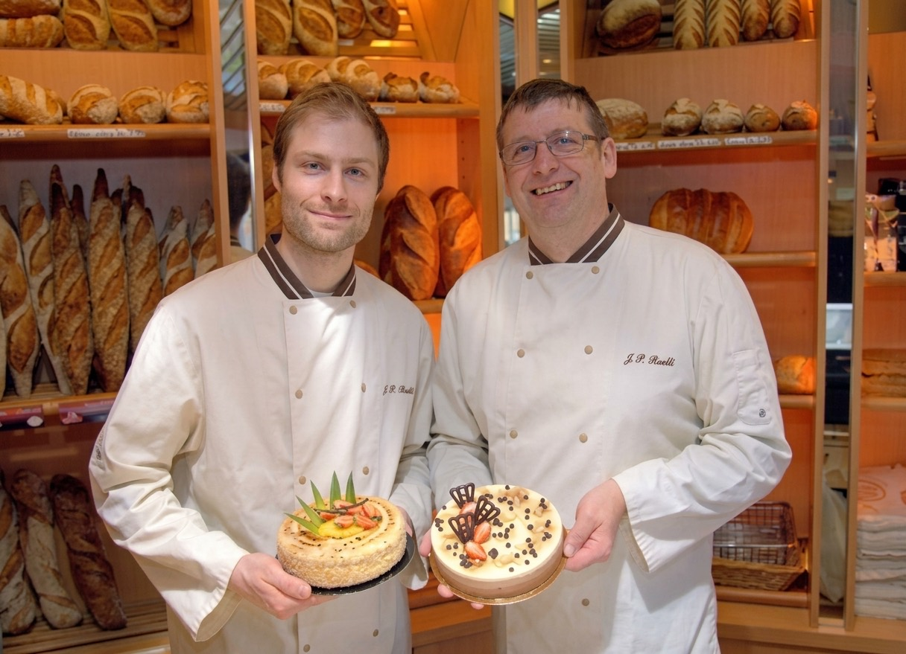
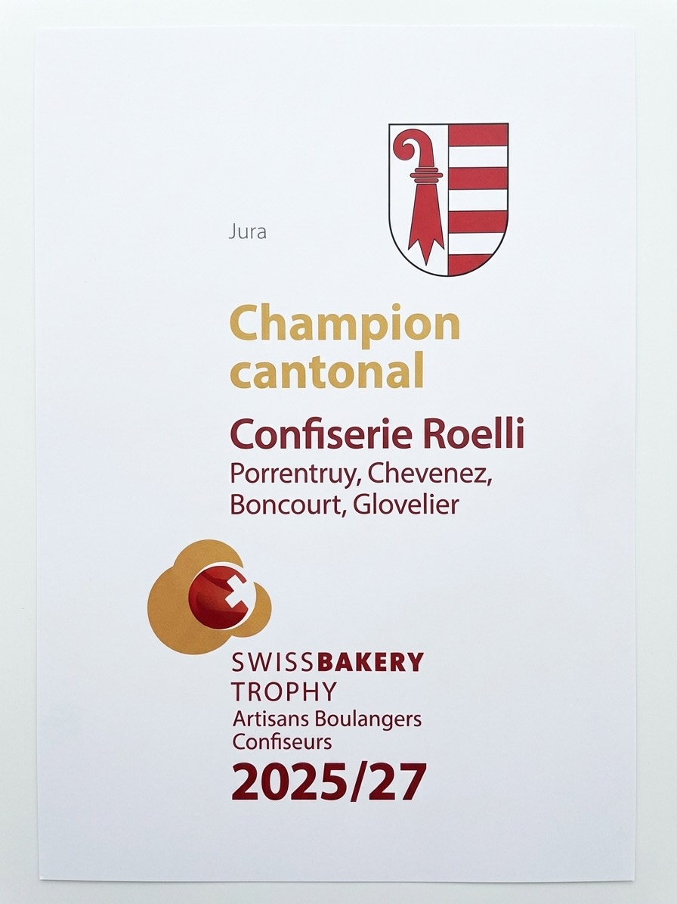

Notre histoire
Porrentruy · depuis 1958
Fondée en 1958 par la famille Roelli au cœur de Porrentruy, notre confiserie perpétue depuis plus de soixante ans un savoir-faire artisanal transmis de génération en génération. Chaque jour, nos maîtres boulangers et pâtissiers façonnent à la main des créations gourmandes qui témoignent de notre attachement aux recettes traditionnelles et aux ingrédients de qualité.
De la viennoiserie dorée du matin aux gâteaux d'exception pour vos célébrations, chaque pièce qui sort de nos ateliers porte l'empreinte d'un métier exercé avec passion et rigueur. Bienvenue dans l'univers Roelli.
Aujourd'hui, la Confiserie Roelli compte cinq points de vente dans le Jura — Porrentruy, Boncourt, Chevenez et Glovelier — et reste fidèle à sa vocation première : offrir chaque matin des produits frais, faits maison, avec le sourire.

Distinction officielle
Champion cantonal du Jura
Swiss Bakery Trophy 2025/27
En 2025, la Confiserie Roelli a été sacrée Champion cantonal du Jura lors du Swiss Bakery Trophy, le concours officiel des artisans boulangers-confiseurs suisses. Une reconnaissance qui couronne l’ensemble de nos équipes et confirme notre engagement envers l’excellence artisanale, dans chacun de nos magasins du Jura.

Notre laboratoire
C'est ici, aux Roches-de-Mars à la sortie de Porrentruy, que tout est fabriqué. Pains, pâtisseries et confiseries sortent chaque jour de notre laboratoire avant de rejoindre nos cinq magasins.
Un seul lieu de production, à quelques minutes de nos boutiques : c'est ce qui nous permet de vous servir chaque matin des produits faits le jour même.
Adresse
Route d'Alle / Roches-de-Mars 12900 Porrentruy
Nos valeurs
Artisanat
Chaque produit est façonné à la main, dans le respect des techniques traditionnelles.
Fraîcheur
Nos pains et pâtisseries sont préparés chaque jour avec des ingrédients frais et locaux.
Proximité
Cinq magasins dans le Jura pour être toujours proches de vous et de votre quotidien.
Nos produits
De la vitrine à la table, cinq métiers réunis sous le même toit.
- Pâtisserie
- Tourtes, mousses et entremets montés et décorés à la main chaque matin, et vos gâteaux d'anniversaire sur commande. Voir nos pâtisseries →
- Boulangerie
- Pains blancs et pains spéciaux, pétris et cuits chaque jour dans notre laboratoire avant de rejoindre nos magasins. Voir nos pains →
- Confiserie et chocolat
- Pralinés, truffes et spécialités chocolatées, travaillés à la main selon les recettes de la maison. Voir notre confiserie →
- Traiteur
- Pièces salées, canapés et buffets sur commande, pour vos réceptions et vos fêtes de famille.
- Restaurant
- Au Tea-room Les Tilleuls, un menu qui change chaque semaine : une entrée, un plat et un dessert. Découvrir Les Tilleuls →